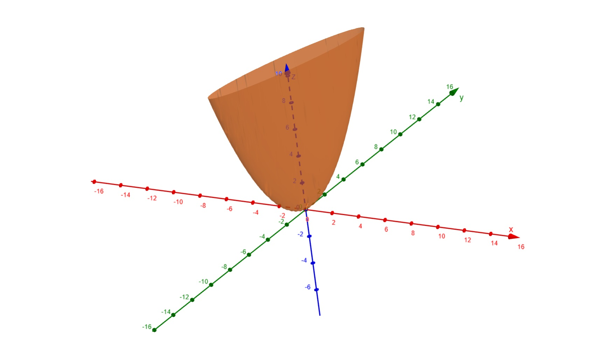

Mathematics for Machine Learning: Primer
drjs-sms@uos
Vectors: Definitions
A vector, \(\boldsymbol{x}\), is a tuple consisting of components. If \(\boldsymbol{x} \in \mathbb{R}^{n}\), then \(\boldsymbol{x}\) is a tuple of \(n\) real number components of the form:
$$ \boldsymbol{x} = (x_{1}, \dots, x_{n}) $$
Commonly, such a vector will be represented as either a column vector or a row vector.
$$
\begin{array}{ll}
\boldsymbol{x} = \begin{bmatrix}
x_{1} \\ \vdots \\ x_{n}
\end{bmatrix} &
\boldsymbol{x} = \begin{bmatrix}
x_{1} & \dots & x_{n}
\end{bmatrix}
\end{array}
$$
Observe that a row vector is the transpose of a column vector, and vice versa.
Vectors: Operations
Two vectors with the same number of components may be added together or subtracted one from the other by component.
$$
\begin{array}{ll}
\text{Let } \boldsymbol{x}, \boldsymbol{y} \in \mathbb{R}^{n} \\
\boldsymbol{x} \pm \boldsymbol{y} = \begin{bmatrix}
x_{1} \pm y_{1} \\
\vdots \\
x_{n} \pm y_{n}
\end{bmatrix} \\
\end{array}
$$
A vector can also be scaled by a factor.
$$
\begin{array}{ll}
\text{Let } \boldsymbol{x} \in \mathbb{R}^{n} \\
\text{Let } k \in \mathbb{R} \\
k\boldsymbol{x} = \begin{bmatrix}
kx_{1}\\
\vdots \\
kx_{n}
\end{bmatrix} \\
\end{array}
$$
Vectors: Operations
Inner Product
$$
\begin{array}{ll}
\text{Let } \boldsymbol{x}, \boldsymbol{y} \in \mathbb{R}^{n} \\
\boldsymbol{x} \cdot \boldsymbol{y} = \begin{bmatrix} x_{1} & \dots & x_{n} \end{bmatrix} \begin{bmatrix} y_{1} \\ \vdots \\ y_{n} \end{bmatrix} = x_{1}y_{1} + \dots + x_{n}y_{n}
\end{array}
$$
Outer Product
$$
\begin{array}{ll}
\text{Let } \boldsymbol{x}, \boldsymbol{y} \in \mathbb{R}^{n} \\
\boldsymbol{x} \otimes \boldsymbol{y} = \begin{bmatrix} x_{1} \\ \vdots \\ x_{n} \end{bmatrix} \begin{bmatrix} y_{1} & \dots & y_{n} \end{bmatrix} =
\begin{bmatrix}
x_{1}y_{1} & \dots & x_{1}y_{n} \\
\vdots & \ddots & \vdots\\
x_{n}y_{1} & \dots & x_{n}y_{n} \\
\end{bmatrix}
\end{array}
$$
Generalized System of Equations
$$
\begin{array}{ll}
\text{Let } \boldsymbol{x} \in \mathbb{R}^{n} \\
\\
\begin{bmatrix} a_{11} \\ \vdots \\ a_{n1} \end{bmatrix} x_{1} + \dots + \begin{bmatrix} a_{n1} \\ \vdots \\ a_{nn} \end{bmatrix} x_{n} = \begin{bmatrix} b_{1} \\ \vdots \\ b_{n} \end{bmatrix}
\end{array}
$$
Linear Intersection via System of Equations (Specific Example)
$$
\begin{array}{ll}
\text{Let } \boldsymbol{x} \in \mathbb{R}^{2} \\
\text{Let } F_{1} = \{\boldsymbol{x} \mid 3x_{1} + 2x_{2} = 12\} \\
\text{Let } F_{2} = \{\boldsymbol{x} \mid 2x_{1} - 5x_{2} = 10\} \\
\\
2x_{1} - 5x_{2} = 10 & \implies x_{1} = 5 + \frac{5}{2}x_{2} \\
& \implies x_{2} = -\frac{6}{19} \\
& \implies x_{1} = \frac{80}{19} \\
F_{1} \cap F_{2} = \{(\frac{80}{19}, -\frac{6}{19})\}
\end{array}
$$
Aside: Linear Diophantine Equations
$$
\begin{array}{ll}
3x_{1} + 2x_{2} = 12 \implies x_{1}, x_{2} \in \mathbb{Z} \\ \\
3(\mod 2)x_{1} \equiv 12(\mod 2) & \implies x_{1} = 2k, k \in \mathbb{Z} \\
2(\mod 3)x_{2} \equiv 12(\mod 3) & \implies x_{2} = -3h, h \in \mathbb{Z} \\
3(2k) + 2(-3h) = 12 & \implies k - h = 2 \\
& \implies x_{2} = 6 - 3k \\ \\
\therefore 3(2k) + 2(6 - 3k) = 12, \forall k \in \mathbb{Z}
\end{array}
$$
Matrices: Definitions
A matrix, \(A\), is a rectangular array of elements. It has a number of rows and a number of columns. For example, the matrix \(A \in \mathbb{R}^{m \times n}\) is a matrix which has \(m\) rows and \(n\) columns of real numbers.
The column vectors we have seen before can be thought of as a kind of matrix. If, for example, we have a column vector \(\boldsymbol{x}\) with \(n\) real numberr components, that can be thought of as a matrix of the form \(\boldsymbol{x} \in \mathbb{R}^{n \times 1}\). Similarly a row vector of the same structure can be thought of as a matrix of the form \(\boldsymbol{x} \in \mathbb{R}^{1 \times n}\)
Matrices, like vectors, can also be transposed. Suppose we have some matrix \(A\) with \(m\) rows and \(n\) columns:
$$
\begin{array}{ll}
A = \begin{bmatrix}
a_{11} & \dots & a_{1n} \\
\vdots & \ddots & \vdots \\
a_{m1} & \dots & a_{mn}
\end{bmatrix} &
A^{T} = \begin{bmatrix}
a_{11} & \dots & a_{m1} \\
\vdots & \ddots & \vdots \\
a_{1n} & \dots & a_{mn}
\end{bmatrix}
\end{array}
$$
Matrices: Operations
Matrices of the same dimensions, like we have seen with vectors, can be added together or subtracted from another in the same element wise fashion.
$$
\begin{array}{ll}
A = \begin{bmatrix}
a_{11} & a_{12} \\
a_{21} & a_{21}
\end{bmatrix} &
B = \begin{bmatrix}
b_{11} & b_{12} \\
b_{21} & b_{21}
\end{bmatrix} \\ \\
A \pm B = \begin{bmatrix}
a_{11} \pm b_{11} & a_{12} \pm b_{12} \\
a_{21} \pm b_{21} & a_{22} \pm b_{22}
\end{bmatrix}
\end{array}
$$
Matrices can also be scaled.
$$
\begin{array}{ll}
kA = \begin{bmatrix}
ka_{11} & ka_{12} \\
ka_{21} & ka_{21}
\end{bmatrix} &
\end{array}
$$
Matrices: Operations
Multiplication
Matrix multiplication is the process of performing multiple dot products row by column. To this end, in order to multiply two matrices the number of rows of one must match the number of columns of the other, or vice versa.
$$
\begin{array}{ll}
\text{Let } A \in \mathbb{R}^{m \times n}, B \in \mathbb{R}^{n \times k} \\
AB \in \mathbb{R}^{m \times k} \\
AB_{ij} = \sum_{l = 1}^{n} a_{il}b_{lj}, i \in [1, m], j \in [1, k]
\\ \\
\text{e.g.} \\
A = \begin{bmatrix} a_{11} & a_{12} \\ a_{21} & a_{22} \end{bmatrix} \\
B = \begin{bmatrix} b_{11} & b_{12} & b_{13} \\ b_{21} & b_{22} & b_{23} \end{bmatrix} \\
AB = \begin{bmatrix}
a_{11}b_{11} + a_{12}b_{21} & a_{11}b_{12} + a_{12}b_{22} & a_{11}b_{13} + a_{12}b_{23} \\
a_{21}b_{11} + a_{22}b_{21} & a_{21}b_{12} + a_{22}b_{22} & a_{21}b_{13} + a_{22}b_{23}
\end{bmatrix}
\end{array}
$$
Determinants
1x1 Matrix
$$
A = \begin{bmatrix} a \end{bmatrix}, \det(A) = a
$$
2x2 Matrix
$$
A = \begin{bmatrix} a & b \\ c & d \end{bmatrix}, \det(A) = ad - cb
$$
Determinants
3x3 Matrix
$$
A = \begin{bmatrix} a & b & c \\ d & e & f \\ g & h & i \end{bmatrix}, \det(A) = a(ei - hf) - b(di - gf) + c(dh - ge)
$$
4x4 Matrix
$$
A = \begin{bmatrix} a & b & c & d \\ e & f & g & h \\ i & j & k & l \\ m & n & o & p \end{bmatrix}
$$
$$
\det(A) =
a\det\left( \begin{bmatrix} f & g & h \\ j & k & l \\ n & o & p \end{bmatrix}\right)
- b\det\left( \begin{bmatrix} e & g & h \\ i & k & l \\ m & o & p \end{bmatrix}\right)
+ c\det\left( \begin{bmatrix} e & f & h \\ i & j & l \\ m & n & p \end{bmatrix}\right)
- d\det\left( \begin{bmatrix} e & f & g \\ i & j & k \\ m & n & o \end{bmatrix}\right)
$$
Minor
The minor, \(M_{ij}\), of a matrix \(A \in \mathbb{R}^{n \times n}\), is the determinant of a submatrix, \(B \in \mathbb{R}^{(n - 1) \times (n - 1)}\), that remains after the ith row and jth column have been removed.
$$
\begin{array}{ll}
\text{Let } A = \begin{bmatrix}
a_{11} & a_{12} & a_{13} \\
a_{21} & a_{22} & a_{23} \\
a_{31} & a_{32} & a_{33}
\end{bmatrix} \\
\\
M_{11} = \det \left(\begin{bmatrix} a_{22} & a_{23} \\ a_{32} & a_{33} \end{bmatrix} \right) = a_{22}a_{33} - a_{32}a_{23}
\end{array}
$$
Cofactor Matrix
$$
\begin{array}{ll}
\text{Let } A, C \in \mathbb{R}^{n \times n} \\
c_{ij} = (-1)^{i + j}M_{ij}\\ \\
e.g. \\
A = \begin{bmatrix}
1 & 2 & 3 \\
2 & 3 & 4 \\
3 & 4 & 5
\end{bmatrix} & &
\begin{array}{l}
c_{11} = (-1)^{2}\left((3 \times 5) - (4 \times 4)\right) = -1 \\
c_{12} = (-1)^{3}\left((2 \times 5) - (3 \times 4)\right) = 2 \\
c_{13} = (-1)^{4}\left((2 \times 4) - (3 \times 3)\right) = -1 \\
c_{21} = (-1)^{3}\left((2 \times 5) - (4 \times 3)\right) = 2 \\
c_{22} = (-1)^{4}\left((1 \times 5) - (3 \times 3)\right) = -4 \\
c_{23} = (-1)^{5}\left((1 \times 4) - (3 \times 2)\right) = 2 \\
c_{31} = (-1)^{4}\left((2 \times 4) - (3 \times 3)\right) = -1 \\
c_{32} = (-1)^{5}\left((1 \times 4) - (2 \times 3)\right) = 2 \\
c_{33} = (-1)^{6}\left((1 \times 3) - (2 \times 2)\right) = -1 \\
\end{array} & &
C = \begin{bmatrix}
-1 & 2 & -1 \\
2 & -4 & 2 \\
-1 & 2 & -1
\end{bmatrix}
\end{array}
$$
Adjugate of a Matrix
$$ \text{adj}(A) = C^{T}$$
Inverse of a Matrix
$$ \det(A) \neq 0 \iff A^{-1} = \frac{1}{\det(A)}\text{adj}(A)$$
Symmetric Matrix
$$ A \in \mathbb{R}^{n \times n} \text{ is symmetric} \iff A = A^{T}$$
Quadratic Form
The quadratic form of a square matrix \(A \in \mathbb{R}^{n \times n}\) is a polynomial described by \(\boldsymbol{x}^{T}A\boldsymbol{x}, \boldsymbol{x} \in \mathbb{R}^{n}\)
$$
\text{e.g. } \begin{bmatrix} x_{1} & x_{2}\end{bmatrix} \begin{bmatrix} a & b \\ c & d \end{bmatrix}\begin{bmatrix} x_{1} \\ x_{2}\end{bmatrix} =
\begin{bmatrix} ax_{1} + cx_{2} \\ bx_{1} + dx_{2} \end{bmatrix}\begin{bmatrix} x_{1} \\ x_{2}\end{bmatrix} =
\begin{bmatrix} ax_{1}^2 + cx_{2}x_{1} \\ bx_{1}x_{2} + dx_{2}^{2} \end{bmatrix} = ax_{1}^{2} + (b + c)x_{1}x_{2} + dx_{2}^{2}
$$
Positive Definite
$$
A \in \mathbb{R}^{n \times n} \text{ is positive definite} \iff \boldsymbol{x}^{T}A\boldsymbol{x} \gt 0, \forall \boldsymbol{x} \in \mathbb{R}^{n} \setminus \{0\}
$$
Positive Semi-Definite
$$
A \in \mathbb{R}^{n \times n} \text{ is positive semi-definite} \iff \boldsymbol{x}^{T}A\boldsymbol{x} \ge 0, \forall \boldsymbol{x} \in \mathbb{R}^{n}
$$
Negative Definite
$$
A \in \mathbb{R}^{n \times n} \text{ is negative definite} \iff \boldsymbol{x}^{T}A\boldsymbol{x} \lt 0, \forall \boldsymbol{x} \in \mathbb{R}^{n} \setminus \{0\}
$$
Negative Semi-Definite
$$
A \in \mathbb{R}^{n \times n} \text{ is negative semi-definite} \iff \boldsymbol{x}^{T}A\boldsymbol{x} \le 0, \forall \boldsymbol{x} \in \mathbb{R}^{n}
$$
Eigenvalues and Eigenvectors
Suppose we have a square matrix \(A \in \mathbb{R}^{n \times n}\) and a vector \(\boldsymbol{x} \in \mathbb{R}^{n}\). Our question is: do there exist vectors of this form for which the following relationship applies?
$$ A\boldsymbol{x} = \lambda \boldsymbol{x}$$
This relationship reduces a linear transformation to a scalar multiplication (a simplification).
$$
\begin{array}{ll}
\text{Let } A = \begin{bmatrix}
8 & 1 \\
1 & 2
\end{bmatrix} \\
\begin{bmatrix}
8 & 1 \\
1 & 2
\end{bmatrix} \begin{bmatrix} x_{1} \\ x_{2}\end{bmatrix} = \lambda \begin{bmatrix} x_{1} \\ x_{2}\end{bmatrix} & \implies \begin{bmatrix}
8 - \lambda & 1 \\
1 & 2 - \lambda
\end{bmatrix} \begin{bmatrix} x_{1} \\ x_{2}\end{bmatrix} = 0
\end{array}
$$
Eigenvalues and Eigenvectors (cont.)
$$
\begin{array}{ll}
\det \left( \begin{bmatrix}
8 - \lambda & 1 \\
1 & 2 - \lambda
\end{bmatrix} \right) = \lambda^{2} - 10\lambda + 15 \text{ (the characteristic polynomial)}\\
\lambda^{2} - 10\lambda + 15 = 0 & \implies \lambda_{1} = 5 - \sqrt{10}, \lambda_{2} = 5 + \sqrt{10} \\ \\ \\
\lambda_{1} = 5 - \sqrt{10} \\ \\
\begin{bmatrix}
3 + \sqrt{10} & 1 \\
1 & -3 + \sqrt{10}
\end{bmatrix} \begin{bmatrix} x_{1} \\ x_{2}\end{bmatrix} = 0 & \implies x_{1} = (3 - \sqrt{10})x_{2}\\
& \text{Let } x_{2} = 1 \implies x_{1} = 3 - \sqrt{10} \\
\lambda_{1} = 5 - \sqrt{10}, \boldsymbol{x}_{1} = (3 - \sqrt{10}, 1)
\end{array}
$$
Eigenvalues and Eigenvectors (cont.)
$$
\begin{array}{ll}
\det \left( \begin{bmatrix}
8 - \lambda & 1 \\
1 & 2 - \lambda
\end{bmatrix} \right) = \lambda^{2} - 10\lambda + 15 \text{ (the characteristic polynomial)}\\
\lambda^{2} - 10\lambda + 15 = 0 & \implies \lambda_{1} = 5 - \sqrt{10}, \lambda_{2} = 5 + \sqrt{10} \\ \\ \\
\lambda_{2} = 5 + \sqrt{10} \\ \\
\begin{bmatrix}
3 - \sqrt{10} & 1 \\
1 & -(3 + \sqrt{10})
\end{bmatrix} \begin{bmatrix} x_{1} \\ x_{2}\end{bmatrix} = 0 & \implies x_{1} = (3 + \sqrt{10})x_{2}\\
& \text{Let } x_{2} = 1 \implies x_{1} = 3 + \sqrt{10} \\
\lambda_{2} = 5 - \sqrt{10}, \boldsymbol{x}_{2} = (3 + \sqrt{10}, 1)
\end{array}
$$
Eigenvalues and Eigenvectors (verification)
$$
\begin{array}{ll}
\lambda_{1}, \boldsymbol{x}_{1} \\
\begin{bmatrix}
8 & 1 \\
1 & 2
\end{bmatrix}\begin{bmatrix} 3 - \sqrt{10} \\ 1\end{bmatrix} & = \begin{bmatrix} 25 - 8\sqrt{10} \\ 5 - \sqrt{10}\end{bmatrix} = & (5 - \sqrt{10})\begin{bmatrix} 3 - \sqrt{10} \\ 1\end{bmatrix} \\ \\
\lambda_{2}, \boldsymbol{x}_{2} \\
\begin{bmatrix}
8 & 1 \\
1 & 2
\end{bmatrix}\begin{bmatrix} 3 + \sqrt{10} \\ 1\end{bmatrix} & = \begin{bmatrix} 25 + 8\sqrt{10} \\ 5 + \sqrt{10}\end{bmatrix} = & (5 + \sqrt{10})\begin{bmatrix} 3 + \sqrt{10} \\ 1\end{bmatrix} \\
\end{array}
$$
Gradients
$$
\begin{array}{ll}
\text{Let } \boldsymbol{x} \in \mathbb{R}^{n} \\
\text{Let } f:\mathbb{R}^{n} \rightarrow \mathbb{R}^{m}, n, m \in \mathbb{N}^{+} \\ \\
\nabla f = \begin{bmatrix}
\frac{\partial}{\partial x_{1}} \\
\vdots \\
\frac{\partial}{\partial x_{n}}
\end{bmatrix} \\ \\
\nabla f = 0 \implies \text{ critical point}
\end{array}
$$
Jacobian
$$
\begin{array}{ll}
\text{Let } \boldsymbol{x} \in \mathbb{R}^{n} \\
\text{Let } f_{i}:\mathbb{R}^{n} \rightarrow \mathbb{R}^{m}, n, m \in \mathbb{N}^{+}, i \in [1, k] \\ \\
\nabla f = \begin{bmatrix}
\frac{\partial f_{1}}{\partial x_{1}} & \dots & \frac{\partial f_{1}}{\partial x_{n}}\\
\vdots & \ddots & \vdots \\
\frac{\partial f_{k}}{\partial x_{1}} & \dots & \frac{\partial f_{k}}{\partial x_{n}}
\end{bmatrix}
\end{array}
$$
Hessian
$$
\begin{array}{ll}
\text{Let } \boldsymbol{x} \in \mathbb{R}^{n} \\
\text{Let } f:\mathbb{R}^{n} \rightarrow \mathbb{R}^{m}, n, m \in \mathbb{N}^{+} \\ \\
\nabla^{2} f = \begin{bmatrix}
\frac{\partial^{2}}{\partial x_{1}^{2}} & \frac{\partial^{2}}{\partial x_{1} \partial x_{2}} & \dots & \frac{\partial^{2}}{\partial x_{1} \partial x_{n}}\\
\frac{\partial^{2}}{\partial x_{2} \partial x_{1}} & \frac{\partial^{2}}{\partial x_{2}^{2}} & \dots & \frac{\partial^{2}}{\partial x_{2} \partial x_{n}} \\
\vdots & \vdots & \ddots & \vdots \\
\frac{\partial^{2}}{\partial x_{n} \partial x_{1}} & \frac{\partial^{2}}{\partial x_{n} \partial x_{2}} & \dots & \frac{\partial^{2}}{\partial x_{n}^{2}}
\end{bmatrix}
\end{array}
$$
Example: Minimizing a cost function
$$
\begin{array}{ll}
\text{Let } a, b \in [1, 100] \\
\text{Let } \boldsymbol{x} \in \mathbb{R}^{2}\\
\text{Let } f: \mathbb{R}^{2} \rightarrow \mathbb{R}, \boldsymbol{x} \mapsto (a - x_{1})^{2} + b(x_{2} - x_{1}^{2})^{2} \\
\end{array}
$$
Finding critical points
$$
\begin{array}{ll}
\text{Expand :} & f(\boldsymbol{x}) = bx_{1}^{4} + x_{1}^{2} - 2bx_{1}^{2}x_{2} - 2ax_{1} + bx_{2}^{2} - a^{2} \\ \\
& \nabla f = \begin{bmatrix}
4bx_{1}^{3} + 2x_{1} - 4bx_{1}x_{2} - 2a \\
2bx_{2} - 2bx_{1}^{2}
\end{bmatrix} \\ \\
\nabla f = 0 & \implies x_{1}^{2} + \frac{1}{2b} - \frac{a}{2bx_{1}} = x_{2} \\
& \implies x_{1} = a \\
& \implies x_{2} = a^{2} \\ \\
\boldsymbol{x^{*}} = (a, a^{2})
\end{array}
$$
Constructing the Hessian
$$
\begin{array}{ll}
\nabla^{2} f(\boldsymbol{x}) = \boldsymbol{H} & = \begin{bmatrix}
12bx_{1}^{2} + 2 - 4bx_{2} & -4bx_{1} \\
-4bx_{1} & 2b
\end{bmatrix} \\ \\
\boldsymbol{H(x^{*})} & = \begin{bmatrix}
8ba^{2} + 2 & -4ba \\
-4ba & 2b
\end{bmatrix} \\
\end{array}
$$
Calculating the quadratic form of \(\boldsymbol{H(x^{*})}\)
$$
\begin{array}{ll}
q_{\boldsymbol{H(x^{*})}} = \boldsymbol{x^{T}H(x^{*})x} & = \begin{bmatrix} x_{1} & x_{2}\end{bmatrix}
\begin{bmatrix}
8ba^{2} + 2 & -4ba \\
-4ba & 2b
\end{bmatrix}
\begin{bmatrix} x_{1} \\ x_{2}\end{bmatrix} \\\\
& = \begin{bmatrix}
8ba^{2}x_{1} + 2x_{1} - 4bax_{2} \\
2bx_{2} - 4bax_{1}
\end{bmatrix}
\begin{bmatrix} x_{1} \\ x_{2}\end{bmatrix} \\\\
q_{\boldsymbol{H(x^{*})}} & = 8ba^{2}x_{1}^{2} + 2x_{1}^{2} - 8bax_{1}x_{2} + 2bx_{2}^{2}
\end{array}
$$
Is \(q_{\boldsymbol{H(x^{*})}} \gt 0, \forall \boldsymbol{x} \in \mathbb{R}^{2}\)?
Graphing the quadratic form of \(\boldsymbol{H(x^{*})}\)
$$
\begin{array}{ll}
a = b = 1 \\
x_{1} = x \\
x_{2} = y
\end{array}
$$

What can we infer?
$$
\begin{array}{ll}
a, b \in [1, 100] \\
\boldsymbol{x^{*}} = (a, a^{2}) \\
q_{\boldsymbol{H(x^{*})}} \gt 0 \\ \\
\nabla f(\boldsymbol{x^{*}}) = 0 \land q_{\boldsymbol{H(x^{*})}} \gt 0, \forall \boldsymbol{x} \in \mathbb{R}^{n} \setminus \{0\} \iff \boldsymbol{x^{*}} \text{ is a local minimum} \\
\nabla f(\boldsymbol{x^{*}}) = 0 \land q_{\boldsymbol{H(x^{*})}} \lt 0, \forall \boldsymbol{x} \in \mathbb{R}^{n} \setminus \{0\} \iff \boldsymbol{x^{*}} \text{ is a local maximum} \\
\nabla f(\boldsymbol{x^{*}}) = 0 \land q_{\boldsymbol{H(x^{*})}} \lt 0 \lt q_{\boldsymbol{H(x^{*})}} \iff \boldsymbol{x^{*}} \text{ is inconclusive} \\
\end{array}
$$
An alternate extrema test (in two variables)
$$
\begin{array}{ll}
\text{Let } f:\mathbb{R}^{2} \rightarrow \mathbb{R}^{m}, m \in \mathbb{N}^{+} \\
\text{Let } \boldsymbol{x^{*}} \in \mathbb{R}^{2} \mid \nabla f(\boldsymbol{x^{*}}) = 0\\
\det \left(\boldsymbol{H(x^{*})} \right) \gt 0 \\
& \land \frac{\partial^{2} f}{\partial x^{2}}(\boldsymbol{x^{*}}) \gt 0 \iff \boldsymbol{x^{*}} \text{ is a local minimum} \\
& \land \frac{\partial^{2} f}{\partial x^{2}}(\boldsymbol{x^{*}}) \lt 0 \iff \boldsymbol{x^{*}} \text{ is a local maximum} \\
\det \left(\boldsymbol{H(x^{*})} \right) \lt 0 & \iff \boldsymbol{x^{*}} \text{ is a saddle point} \\
\det \left(\boldsymbol{H(x^{*})} \right) = 0 & \iff \boldsymbol{x^{*}} \text{ is inconclusive} \\
\end{array}
$$
An alternate extrema test (in more than two variables)
$$
\begin{array}{ll}
\text{Let } f:\mathbb{R}^{n} \rightarrow \mathbb{R}^{m}, m \in \mathbb{N}^{+} \\
\text{Let } \boldsymbol{x^{*}} \in \mathbb{R}^{n} \mid \nabla f(\boldsymbol{x^{*}}) = 0\\
\text{Let } \boldsymbol{H(x^{*})} \in \mathbb{R}^{n \times n} \\
\text{Let } \Lambda(\boldsymbol{H(x^{*})}) = \{\lambda_{i} \mid i \in [1, n]\}\\
\lambda_{i} \gt 0, \forall i \in [1, n] & \iff \boldsymbol{x^{*}} \text{ is a local minimum} \\
\lambda_{i} \lt 0, \forall i \in [1, n] & \iff \boldsymbol{x^{*}} \text{ is a local maximum} \\
\text{mixed } \rightarrow \boldsymbol{x^{*}} \text{ is a saddle point} \\
\text{otherwise } \rightarrow \boldsymbol{x^{*}} \text{ is inconclusive} \\
\end{array}
$$